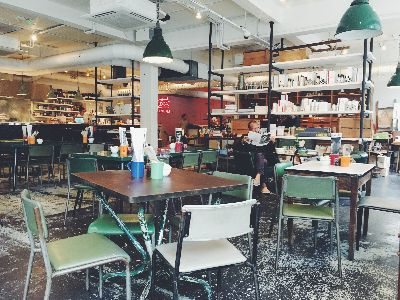
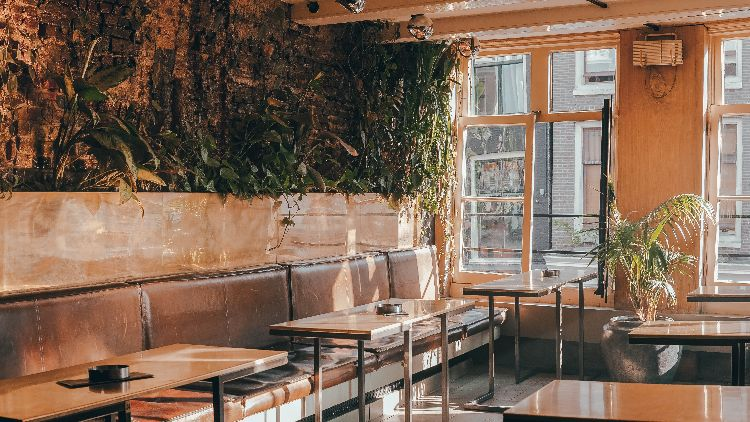
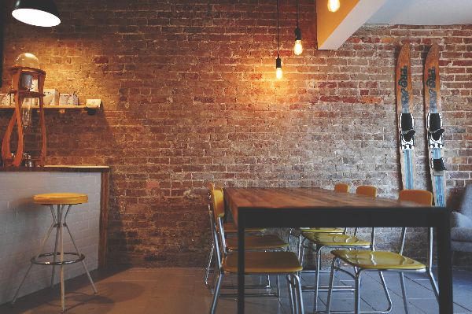

Tufts/Somerville

Our location in Somerville has been serving the residents of the
town and nearby Tufts University since 2006. This location is the
first Pizza Nights to be established and, as such, is a must-see
for any pizza connoisseur.
Boston

In the streets of Boston, this location is our second to be
established and faithfully provides Bostonians of all kinds the
late night pizza they deserve.
Ogden, Utah

Far from our roots in Massachusetts, a founding member of the team
decided to branch out to his hometown of Ogden, Utah. Though quite
a distance separates this restaurant from the other two, the taste
and quality you expect can still be found here.